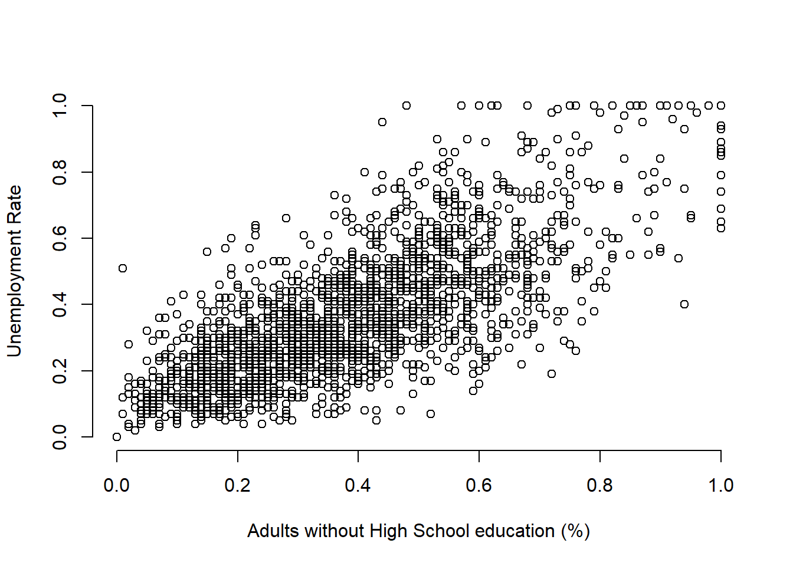
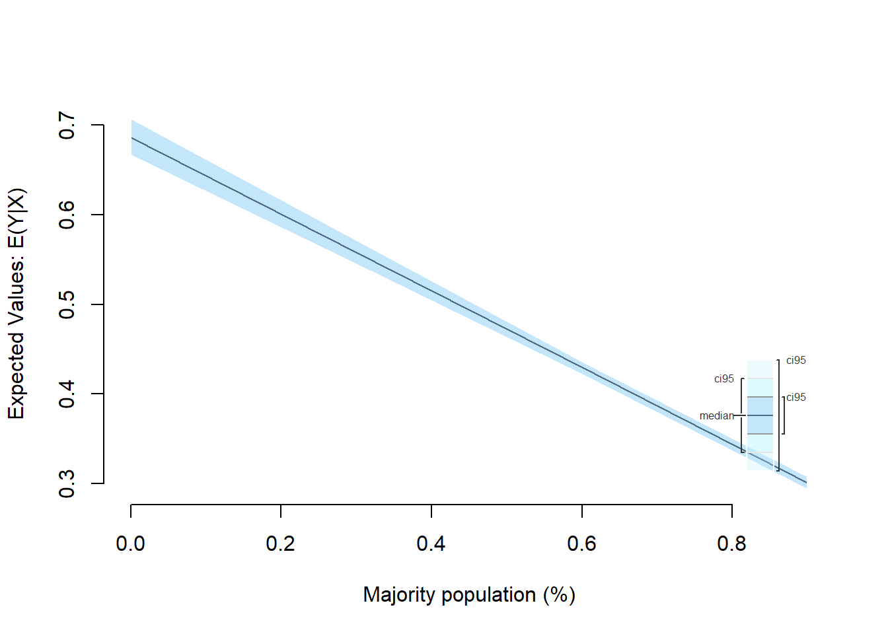

Lab 2 – Linear Regression
Philipp Broniecki and Lucas Leemann – Machine Learning 1K
The Linear Model (based on Leemann and Mykhaylov, PUBLG100)
When starting a new R session it is good practice to ensure that the working space is empty. We can do so by deleting all existing objects with the rm() command:
rm(list=ls()) # clear workspaceLoading Dataset in Stata Format
We will load a data set in Stata format. One of the core packages that comes pre-installed with R allows us to directly read a file saved in Stata format. The package is called foreign and it’s designed to provide support for non-native (or “foreign”) file formats.
The function we need to use for loading a file in Stata format is read.dta(). We use data from the Institute for Quality of Governance today. You can download a codebook for the variables here and download the data here.
Now let’s load the dataset and do our usual routine of getting to know our data.
library(foreign) # to work with foreign file formats
# loading a STATA format data set (remember to load the library foreign 1st)
world.data <- read.dta("./data/QoG2012.dta")
# the dimensions: rows (observations) and columns (variables)
dim(world.data)## [1] 194 7# the variable names
names(world.data) ## [1] "h_j" "wdi_gdpc" "undp_hdi" "wbgi_cce" "wbgi_pse"
## [6] "former_col" "lp_lat_abst"# the top ten rows and all columns
world.data[ 1:10 , ]## h_j wdi_gdpc undp_hdi wbgi_cce wbgi_pse former_col lp_lat_abst
## 1 -5 628.4074 NA -1.5453584 -1.9343837 0 0.3666667
## 2 -5 4954.1982 0.781 -0.8538115 -0.6026081 0 0.4555556
## 3 -5 6349.7207 0.704 -0.7301510 -1.7336243 1 0.3111111
## 4 NA NA NA 1.3267342 1.1980436 0 0.4700000
## 5 -5 2856.7517 0.381 -1.2065741 -1.4150945 1 0.1366667
## 6 NA 13981.9795 0.800 0.8624368 0.7084046 1 0.1892222
## 7 -5 2980.8616 0.746 -0.9852442 -1.1296966 0 0.4477778
## 8 -5 8584.8857 0.853 -0.7264611 -1.0361214 1 0.3777778
## 9 1 32201.2227 0.946 1.8478516 1.2044924 0 0.3000000
## 10 1 32082.7168 0.934 1.9580450 1.3096740 0 0.5244445Dplyr Package
Today we introduce another package called dplyr. It is a package that makes it easier for you to work with data sets. It includes functions that let you rename variables, pick out observations that fulfill certain conditions, like gender==female, lets you select certain variables and many more things. To install the package run install.packages("dplyr"). Today we will load another package called Zelig. Both Zelig and dplyr have a function called select(), so the library that we load last overwrites the previous select() function. In order to avoid clashes like that we will not load dplyr into the namespace but instead call its functions by writing dplyr::function_name().
Note: Install a package only once.
install.packages("dplyr")Dplyr rename()
The first function from the dplyr package that will make your life easier is rename(). You may have noticed that the variable names in our data are quite cryptic. With the help of the codebook we understand what is going on but we may want to use more intuitive variable names instead. The rename() function lets you do that.
Here’s a list of arguments we need to provide to the rename() function and their descriptions.
rename(dataset, expression)| Argument | Description |
|---|---|
| dataset | The first argument is the name of your dataset (we have called it world.data). |
| expression | The second argument is the expression that assigns a new variable name to an existing variable in our dataset. For example: • new.variable = existing.variable |
We want to rename the variable h_j which is a categorical variable, where 1 means that an independent judiciary exists and the other category means that the executive branch has some control over the judiciary. In order to save your new variable name in the dataset world.data, we have to assign our renamed variable to the dataset using the <- symbol. We will now rename h_j into judiciary.
# rename a variable and save the result in our data frame
world.data <- dplyr::rename(world.data, judiciary = h_j)
# check the result
names(world.data)## [1] "judiciary" "wdi_gdpc" "undp_hdi" "wbgi_cce" "wbgi_pse"
## [6] "former_col" "lp_lat_abst"Zelig and texreg
We’re introducing two new packages. The Zelig package provides functionality that simplifies some regression tasks, while texreg makes it easy to produce publication quality output from our regression models. We’ll discuss these packages in more detail as we go along but for now let’s just install them with the install.packages() function.
install.packages("Zelig")
install.packages("texreg")Now, let’s load Zelig, textreg, and dplyr.
library(texreg)
library(Zelig)We will use a new dataset that comes from the 1990 US Census and provides demographic and socio-economic data in multiple files. The dataset includes observations from 1,994 communities with each observation identified by a state and communityname variable.
Let’s load 1 dataset into R using read.csv() and confirm that the state and communityname are present in each dataset. You can either directly load the dataset from the online source as shown in the code below. Alternatively, get communities here.
# load the communities datasets
communities <- read.csv("http://philippbroniecki.github.io/ML2017.io/data/communities.csv")Dplyr select() Function
Since our dataset has more columns than we need, let’s select only the ones we’re interested in and rename them with meaningful names. One approach would be to use either the subset() function or the square bracket [ ] extraction operator for selecting the columns we’re interested in. But the easiest way to accomplish this is with the dplyr select() function that allows us select the columns we need and rename them at the same time.
communities <- dplyr::select(communities,
state,
Community = communityname,
UnemploymentRate = PctUnemployed,
NoHighSchool = PctNotHSGrad,
White = racePctWhite)Now that we’ve merged the dataset and renamed the columns the way we want, let’s try to visualize the data with a simple plot command.
Is there a correlation between unemployment rate and lack of high school level education?
plot(communities$NoHighSchool, communities$UnemploymentRate,
xlab = "Adults without High School education (%)",
ylab = "Unemployment Rate",
bty = "n")
In order to answer that question empirically, we will run linear regression using the lm() function in R. The lm() function needs to know the relationship we’re trying to model and the dataset for our observations. The two arguments we need to provide to the lm() function are described below.
| Argument | Description |
|---|---|
formula |
The formula describes the relationship between the dependent and independent variables, for example dependent.variable ~ independent.variable In our case, we’d like to model the relationship using the formula: UnemploymentRate ~ NoHighSchool |
data |
This is simply the name of the dataset that contains the variable of interest. In our case, this is the merged dataset called communities. |
For more information on how the lm() function works, type help(lm) in R.
model1 <- lm(UnemploymentRate ~ NoHighSchool, data = communities)The lm() function has modeled the relationship between UnemploymentRate and NoHighSchool and we’ve saved it in a variable called model1. Let’s use the summary() function to see what this linear model looks like.
summary(model1)##
## Call:
## lm(formula = UnemploymentRate ~ NoHighSchool, data = communities)
##
## Residuals:
## Min 1Q Median 3Q Max
## -0.42347 -0.08499 -0.01189 0.07711 0.56470
##
## Coefficients:
## Estimate Std. Error t value Pr(>|t|)
## (Intercept) 0.078952 0.006483 12.18 <2e-16 ***
## NoHighSchool 0.742385 0.014955 49.64 <2e-16 ***
## ---
## Signif. codes: 0 '***' 0.001 '**' 0.01 '*' 0.05 '.' 0.1 ' ' 1
##
## Residual standard error: 0.1352 on 1992 degrees of freedom
## Multiple R-squared: 0.553, Adjusted R-squared: 0.5527
## F-statistic: 2464 on 1 and 1992 DF, p-value: < 2.2e-16The output from lm() might seem overwhelming at first so let’s break it down one item at a time.

| # | Description |
|---|---|
 |
The dependent variable, also sometimes called the outcome variable. We are trying to model the effects of NoHighSchool on UnemploymentRate so UnemploymentRate is the dependent variable. |
 |
The independent variable or the predictor variable. In our example, NoHighSchool is the independent variable. |
 |
The differences between the observed values and the predicted values are called residuals. |
 |
The coefficients for the intercept and the independent variables. Using the coefficients we can write down the relationship between the dependent and the independent variables as: UnemploymentRate = 0.078952 + ( 0.7423853 * NoHighSchool ) This tells us that for each unit increase in the variable NoHighSchool, the UnemploymentRate increases by 0.7423853. |
 |
The p-value of the model. Recall that according to the null hypotheses, the coefficient of interest is zero. The p-value tells us whether can can reject the null hypotheses or not. |
 |
The standard error estimates the standard deviation of the coefficients in our model. We can think of the standard error as the measure of precision for the estimated coefficients. |
 |
The t statistic is obtained by dividing the coefficients by the standard error. |
 |
The R-squared and adjusted R-squared tell us how much of the variance in our model is accounted for by the independent variable. The adjusted R-squared is always smaller than R-squared as it takes into account the number of independent variables and degrees of freedom. |
Now let’s plot the regression line with our observations using the abline() function.
plot(communities$NoHighSchool, communities$UnemploymentRate,
xlab = "Adults without High School education (%)",
ylab = "Unemployment Rate")
abline(model1, col = "red")
While the summary() function provides a slew of information about a fitted regression model, we often need to present our findings in easy to read tables similar to what you see in journal publications. The texreg package we installed earlier allows us to do just that.
Let’s take a look at how to display the output of a regression model on the screen using the screenreg() function from texreg.
screenreg(model1)##
## =========================
## Model 1
## -------------------------
## (Intercept) 0.08 ***
## (0.01)
## NoHighSchool 0.74 ***
## (0.01)
## -------------------------
## R^2 0.55
## Adj. R^2 0.55
## Num. obs. 1994
## RMSE 0.14
## =========================
## *** p < 0.001, ** p < 0.01, * p < 0.05Returning to our example, are there other variables that might explain unemployment rates in our communities dataset? For example, is unemployment rate higher or lower in communities with different levels of minority population?
We first create a new variable called Minority by subtracting the percent of White population from 1. Alternatively, we could have added up the percent of Black, Hispanic and Asians to get the percentage of minority population since our census data also has those variables.
communities$Minority <- 1 - communities$WhiteNext we fit a linear model using Minority as the independent variable.
model2 <- lm(UnemploymentRate ~ Minority, data = communities)
summary(model2)##
## Call:
## lm(formula = UnemploymentRate ~ Minority, data = communities)
##
## Residuals:
## Min 1Q Median 3Q Max
## -0.45521 -0.12189 -0.02369 0.10162 0.68203
##
## Coefficients:
## Estimate Std. Error t value Pr(>|t|)
## (Intercept) 0.257948 0.005506 46.85 <2e-16 ***
## Minority 0.428702 0.015883 26.99 <2e-16 ***
## ---
## Signif. codes: 0 '***' 0.001 '**' 0.01 '*' 0.05 '.' 0.1 ' ' 1
##
## Residual standard error: 0.173 on 1992 degrees of freedom
## Multiple R-squared: 0.2678, Adjusted R-squared: 0.2674
## F-statistic: 728.5 on 1 and 1992 DF, p-value: < 2.2e-16Now let’s see how this model compares to our first model. We can show regression line from model2 just like we did with our first model.
plot(communities$Minority, communities$UnemploymentRate,
xlab = "Minority population (%)",
ylab = "Unemployment Rate")
abline(model2, col = "blue")
Does model2 offer a better fit than model1? Maybe we can answer that question by looking at the regression tables instead. Let’s print the two models side-by-side in a single table with screenreg().
screenreg(list(model1, model2))##
## ======================================
## Model 1 Model 2
## --------------------------------------
## (Intercept) 0.08 *** 0.26 ***
## (0.01) (0.01)
## NoHighSchool 0.74 ***
## (0.01)
## Minority 0.43 ***
## (0.02)
## --------------------------------------
## R^2 0.55 0.27
## Adj. R^2 0.55 0.27
## Num. obs. 1994 1994
## RMSE 0.14 0.17
## ======================================
## *** p < 0.001, ** p < 0.01, * p < 0.05Finally, let’s save the same output as a Microsoft Word document using htmlreg().
htmlreg(list(model1, model2), file = "lab4_model_comparison.doc")## The table was written to the file 'lab4_model_comparison.doc'.Predictions and Confidence Interval
We will use the Zelig package since it provides convenient functions for making predictions and plotting confidence intervals. First, let’s go back to our last model where we used Minority as the independent variable but this time estimate the model using the Zelig package. The arguments for the zelig() function are very similar to what we used with lm(). The only difference is that we need to tell Zelig what type of model we’re trying to estimate.
z.out <- zelig(UnemploymentRate ~ White, data = communities, model = "ls")## How to cite this model in Zelig:
## R Core Team. 2007.
## ls: Least Squares Regression for Continuous Dependent Variables
## in Christine Choirat, Christopher Gandrud, James Honaker, Kosuke Imai, Gary King, and Olivia Lau,
## "Zelig: Everyone's Statistical Software," http://zeligproject.org/The model estimated with zelig() is saved in a variable called z.out. We can use the summary() function exactly the same way as we used it with lm() to print out the estimated model.
summary(z.out)## Model:
##
## Call:
## z5$zelig(formula = UnemploymentRate ~ White, data = communities)
##
## Residuals:
## Min 1Q Median 3Q Max
## -0.45521 -0.12189 -0.02369 0.10162 0.68203
##
## Coefficients:
## Estimate Std. Error t value Pr(>|t|)
## (Intercept) 0.68665 0.01258 54.57 <2e-16
## White -0.42870 0.01588 -26.99 <2e-16
##
## Residual standard error: 0.173 on 1992 degrees of freedom
## Multiple R-squared: 0.2678, Adjusted R-squared: 0.2674
## F-statistic: 728.5 on 1 and 1992 DF, p-value: < 2.2e-16
##
## Next step: Use 'setx' methodNext, let’s use Zelig’s setx() and sim() functions for making predictions and plotting confidence intervals.
x.out <- setx(z.out, White = seq(0, .9, 0.3))
s.out <- sim(z.out, x = x.out)
summary(s.out)##
## [1] 0
##
##
## sim range :
## -----
## ev
## mean sd 50% 2.5% 97.5%
## 1 0.686811 0.0126072 0.6863526 0.6622854 0.7115023
## pv
## mean sd 50% 2.5% 97.5%
## [1,] 0.6921317 0.1736318 0.6933753 0.3436496 1.039791
##
##
## [1] 0.3
##
##
## sim range :
## -----
## ev
## mean sd 50% 2.5% 97.5%
## 1 0.558116 0.008193077 0.5578479 0.5419401 0.5739425
## pv
## mean sd 50% 2.5% 97.5%
## [1,] 0.5652768 0.1719234 0.5595203 0.2340388 0.8994224
##
##
## [1] 0.6
##
##
## sim range :
## -----
## ev
## mean sd 50% 2.5% 97.5%
## 1 0.4294209 0.004542989 0.4294711 0.4207407 0.4377695
## pv
## mean sd 50% 2.5% 97.5%
## [1,] 0.4269502 0.168812 0.4220842 0.09314447 0.7466767
##
##
## [1] 0.9
##
##
## sim range :
## -----
## ev
## mean sd 50% 2.5% 97.5%
## 1 0.3007259 0.004413418 0.300735 0.2923287 0.3089364
## pv
## mean sd 50% 2.5% 97.5%
## [1,] 0.2890589 0.1718188 0.2898388 -0.06058682 0.634022ci.plot(s.out, xlab = "Majority population (%)", ci = 95)
Additional Resources
Exercises
- Load the immigration dataset dataset and the employment dataset and merge them to the communities dataset from the seminar.
- You can merge using the
merge()function.
- You can merge using the
- Rename the
PctImmigRec5variable toRecentImmigration5. - Estimate a model explaining the relationship between unemployment rate and recent immigration over the past 5 years using the variable
RecentImmigration5. - Plot the regression line of the model.
- How does this model compare to the models we estimated in the seminar with
NoHighSchoolandMinorityas independent variables? Present your findings by comparing the output of all three models in side-by-side tables using thetexregpackage. - Save your model comparison table to a Microsoft Word document (or another format if you don’t use Word).
- Generate predicted values from the fitted model with
RecentImmigration5and plot the confidence interval using Zelig. - Save all the plots as graphics files.
- Hint: Look at the Plot window in RStudio for an option to save your plot. Alternatively, you can use the
png()function for saving the graphics file directly from your R script.
- Hint: Look at the Plot window in RStudio for an option to save your plot. Alternatively, you can use the